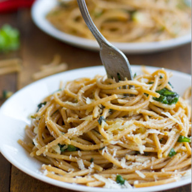

Garlic Pasta

Description
A simple pasta recipe for those cosy nights in.
If you're a garlic fan, you should check out this recipe!
Ingredients
- 6 cloves garlic, divided
- 1/4 c.extra-virgin olive oil, divided
- 1/2 c.panko bread crumbs
- 1/4 tsp. crushed red pepper flakes
- Salt
- 1 lb. dry spaghetti
- 1 tbsp. butter
- Juice and zest of 1/2 lemon
- 1/3 c.freshly grated Parmesan
- 1/3 c.freshly chopped parsley
Steps
- Mince 3 garlic cloves. In a large skillet over medium-high heat, heat 3 tbsp olive oil.
Add breadcrumbs and minced garlic and season with crushed red pepper flakes and salt.
Cook until bread crumbs or golden and garlic is fragrant, about 3 minutes.
Remove breadcrumbs onto a paper towel lined plate and wipe out skillet.
- Thinly slice remaining 3 cloves garlic. Place a large pot of salted water
over high heat and bring to a boil. Prepare spaghetti according to
package instructions, reserving at least 1 cup pasta water.
- Meanwhile, return skillet to medium heat and add remaining tablespoon
of olive oil and butter. When butter is melted, add sliced garlic.
Cook until garlic is fragrant and anchovies are dissolved, about
2 minutes. Lower heat to medium-low until pasta is done cooking.
- Add pasta to skillet and toss. Stir in lemon juice, lemon zest, and
Parmesan if using. Add pasta water to thicken sauce as needed.
Stir in parsley and 3/4 of the bread crumbs and toss. Top with
remaining bread crumbs and serve immediately.
Other recipes